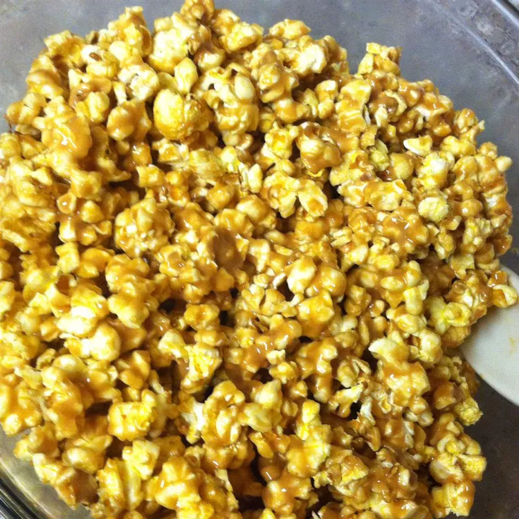

Recipe

Directions
- 1/3 cup light corn syrup
- 1/3 cup honey
- 1/3 white sugar
- 3/4 cup peanut butter
- 1 teaspoon vanilla extract
- 3 (3.5 ounce) pckages microwave popcorn, popped
Steps
- Bring corn syrup, honey, and sugar to a boil in a saucepand; cook at a boil for 2 minutes.
Immediately remove from heat and stir peanut butter and vanilla into syrup mixture until peanut butter has melted completely.
- Pour popcorn into a large bowl; pour sauce over popcorn and stir until evenly coated.
Allow to cool completely and break into chunks to serve.
Home